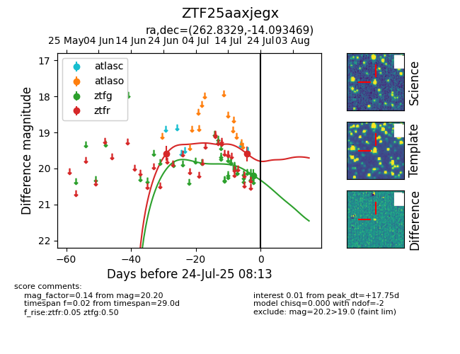

Target ZTF25aaxjegx at 2025-07-24 08:13, see:
FINK: fink-portal.org/ZTF25aaxjegx
Lasair: lasair-ztf.lsst.ac.uk/objects/ZTF25aaxjegx
ALeRCE: alerce.online/object/ZTF25aaxjegx
alt names
ZTF25aaxjegx (ztf,fink)
coordinates:
equatorial (ra, dec) = (262.8329,-14.09347)
galactic (l, b) = (10.9319,+10.63629)
photometry
last ztfg=20.20, ztfr=19.60
1 ztfg, 2 ztfr detections
